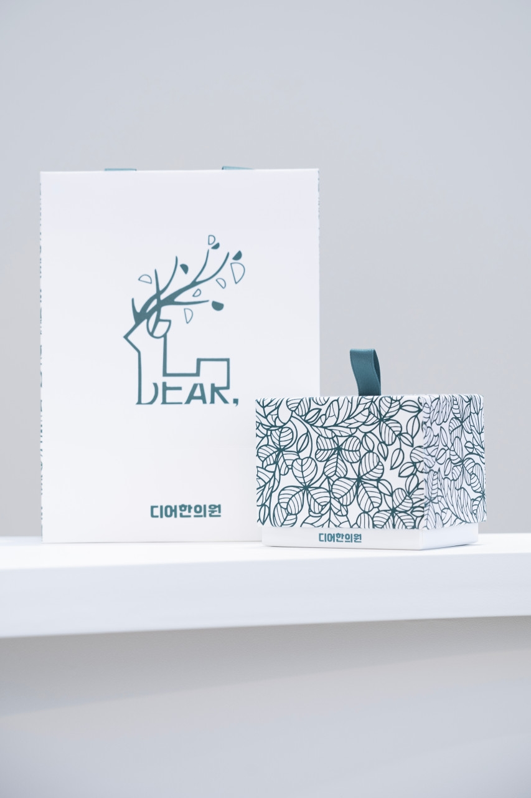
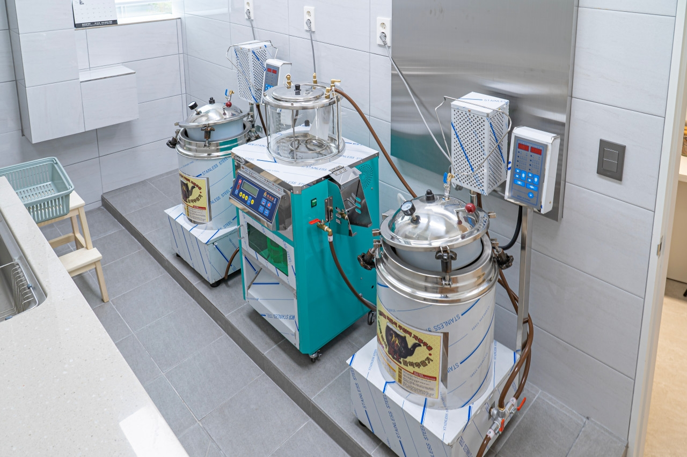
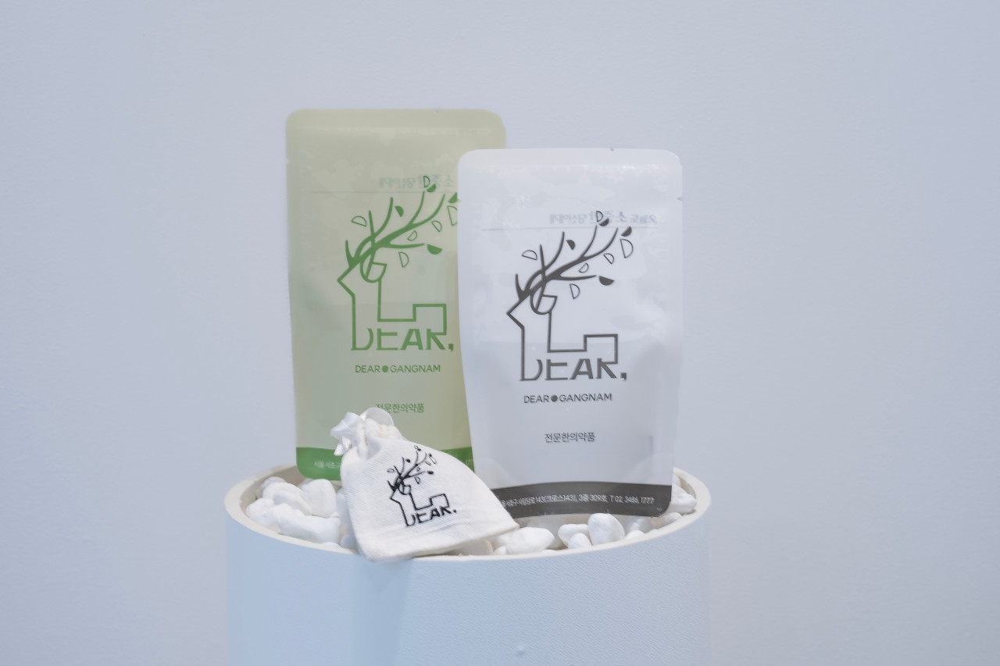

DEAR SERVICES
适合当今的身体和生活
DEAR的四项建议
体重、精力、睡眠和压力，
甚至你的身体发出的信号。
DEAR韩医院针对每个人的病情和生活，
我们一起找到适合我们目标的方向。




01 / BE DEER
鹿饮食
比体重，
首先，看看你的身体为什么会发生变化。
视频不仅仅基于体重数字。
代谢状况和体质、食欲和睡眠、
看看你的消化状况和生活习惯
我们设计适合您当前身体的管理方向。
- 01一起检查你的新陈代谢和体质。
- 02考虑食欲、睡眠、消化和生活方式。
- 03我们根据您当前的情况设计个性化的治疗方案。
02 / DEAR GONGJINDAN
DEAR公金丹
良好的谐振组之间的区别是
它始于一个看不见的过程。
DEAR韩医院销售贡金丹的成品。
它不是从外部供应的。
药材均在医院内直接挑选、配制。
检查您目前的健康状况和服用目的后
我们一起决定我们需要采取的方向。
- 01代表董事亲自准备药物。
- 02我们直接管理药品的选择和制造过程。
- 03检查您的健康状况和服用目的。
03 / HERBAL DECOCTION
元内汤全体质草药
根据一个人的现在情况，
它是直接在医院准备的。
Dear Oriental Medical Clinic提供草药和宫金丹。
它直接在医院内制备和分发。
我们直接监控从药品管理到配药过程的一切。
目前的身体状况和生活，
准备适合服用目的的处方。
- 01它直接在医院内制备和分发。
- 02我们直接管理药用成分和制造过程。
- 03我们根据您当前的病情准备个性化的处方。
04 / DEER BALANCE
鹿平衡
睡眠和压力，
当日常生活节奏被打乱时。
Dear Balance 是一种治疗压力和疲劳的方法，
相互关联的信号，例如睡眠和生活方式模式
这是一起考虑的定制护理。
检查电流不平衡情况
我们思考可以在日常生活中持续的管理方向。
- 01检查您的睡眠和压力状态。
- 02疲劳和生活方式模式要一起考虑。
- 03我正在思考我的日常生活可以继续的方向。